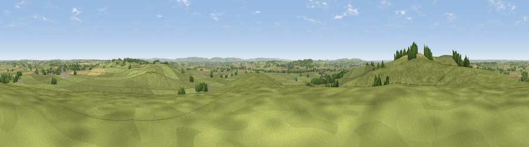

Viewpoint near Quainton
#16327 in England · top 18% of its area beats it · near QuaintonThe view, rendered

A 360° render of this exact spot computed from the terrain model, tree cover and land cover — summer colours, afternoon light, calibrated against photographs of famous viewpoints. Real trees, hedges and buildings will differ in detail.
The panorama
Grey silhouette: terrain skyline in each direction (720 bearings, Earth curvature and refraction included). Dashed green: skyline with trees (+15 m) and buildings (+8 m) as obstacles. Blue strip: how far the ground is visible on each bearing.
Where the view opens
Wedge length = distance to the farthest visible ground on that bearing (vegetation-aware). Rings at 10, 25 and 50 km.
What fills the view
81% grassland · 12% cropland · 6% woodland · 1% built-up
Angular shares of the visible panorama (visual magnitude), not map area. Landscape diversity 0.29 (0–1 Shannon).
Key numbers
More beautiful places nearby
The staircase of upgrades: each row has a higher view potential than everything closer. Driving times are estimates from straight-line distance, calibrated against real road routing — check an actual route before setting out.
| Place | Direction | Drive | Score |
|---|---|---|---|
| Quainton Hill | WNW · 1 km | ~2 min | 61.2 |
| Viewpoint near Quainton | NW · 1 km | ~3 min | 64.9 |
| Viewpoint near Ashendon | SW · 9 km | ~18 min | 65.0 |
| Muswell Hill | WSW · 13 km | ~24 min | 67.9 |
| Viewpoint near Halton | SE · 17 km | ~30 min | 74.3 |
| Coombe Hill Monument | SSE · 17 km | ~30 min | 75.5 |
| Viewpoint near Woolstone | SW · 57 km | ~80 min | 76.7 |
| Viewpoint near Meon Vale | WNW · 63 km | ~86 min | 77.0 |
51.88400, -0.90049 · source: screening · position refined by local search. Computed location — check access rights before visiting.